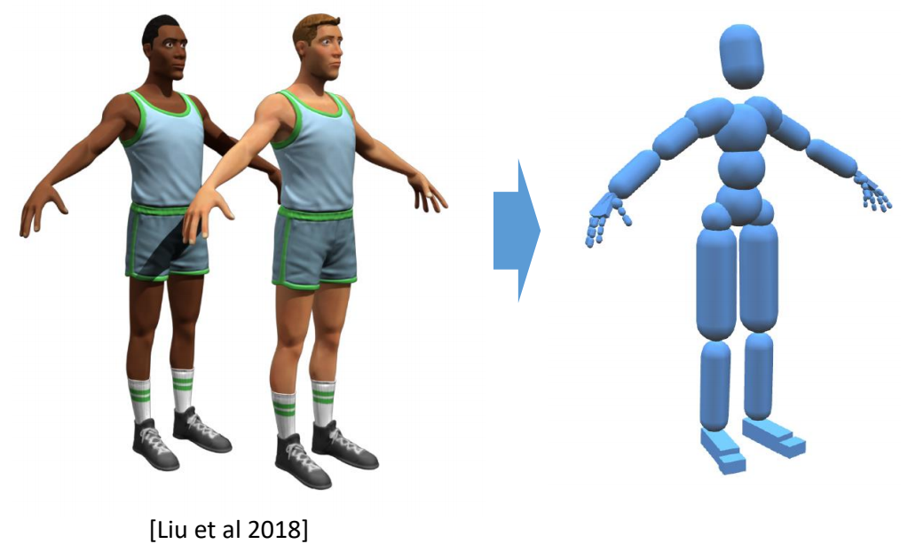
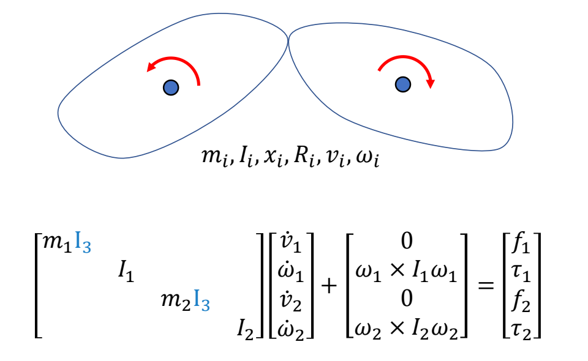
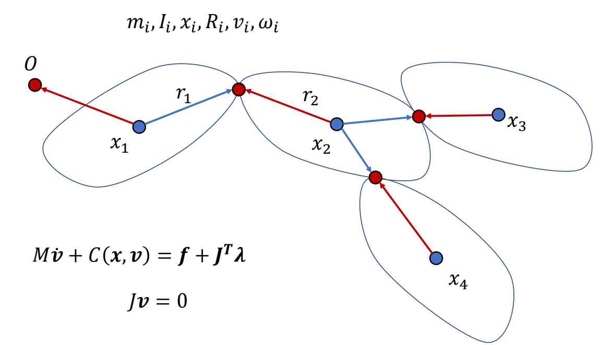

角色的分段刚体表示与仿真
✅ 本章定位：理解如何将角色建模为分段多刚体系统，这是物理仿真的基础。
一、刚体动力学基础
回顾 GAMES103 内容
刚体动力学的核心公式已在 GAMES103 中详细讲解，本节只做简要回顾。
刚体运动方程：
$$ \begin{bmatrix} mI_3 & 0\\ 0 & I \end{bmatrix}\begin{bmatrix} \dot{v} \\ \dot{\omega } \end{bmatrix}+\begin{bmatrix} 0\\ \omega \times I\omega \end{bmatrix}=\begin{bmatrix} f \\ \tau \end{bmatrix} $$
| 符号 | 含义 |
|---|---|
| \(m\) | 质量 |
| \(I\) | 转动惯量张量 |
| \(x, v\) | 位置、线速度 |
| \(R, \omega\) | 旋转、角速度 |
| \(f, \tau\) | 外力、外力矩 |
深入学习：
二、角色的物理仿真表示
从角色模型到仿真模型

在物理仿真中，角色不能直接使用渲染用的 Mesh，而是需要简化为分段多刚体系统。
仿真角色的组成
Rigid bodies（刚体）:
- \(m_i, I_i\) - 质量和转动惯量
- \(x_i, R_i\) - 位置和旋转
- Geometries - 碰撞几何体（仿真中使用简单几何体代替 Mesh）
Joints（关节）:
- Position - 关节位置
- Type - 关节类型（Hinge、Universal、Ball 等，决定约束方程）
- Bodies - 连接的刚体
✅ 关节的数量比刚体的数量少 1
碰撞几何体的选择
| 身体部位 | 常用几何体 | 原因 |
|---|---|---|
| 头部 | 球体 | 形状接近、计算简单 |
| 躯干 | 胶囊体/盒体 | 近似 torso 形状 |
| 手臂/腿 | 胶囊体 | 细长形状 |
| 手/脚 | 盒体 | 便于接触检测 |
✅ 使用简单几何体可以大幅提高碰撞检测和约束求解的效率。
在物理引擎中定义角色
在物理引擎中创建一个刚体需要提供：
Masses: m, I // 质量和转动惯量
Kinematics: x, v, R, ω // 运动学状态
Geometry: Box/Sphere/Capsule/Mesh // 碰撞几何体
Collision detection // 碰撞检测
Compute m, I // 计算质量属性
三、分段多刚体动力学
从单刚体到多刚体
单刚体： $$ M\dot{v} + C(x,v) = f $$
其中 \(M\) 和 \(C\) 是分块对角矩阵，每个刚体独立。

✅ 两个刚体如果独立，可以以矩阵的方式扩展。
✅ 分段多刚体在公式上没有本质区别，只是矩阵更大。
对于 \(n\) 个刚体的系统：
- \(M\) 是 \(6n \times 6n\) 的分块对角矩阵
- \(C(x,v)\) 是 \(6n\) 维向量
多刚体系统的扩展

✅ 关于约束力的说明：当刚体通过关节连接时，需要添加约束力 \(J^T\lambda\)。这部分内容在后续章节详细讲解。
与后续章节的关系
| 本节内容 | 后续应用 |
|---|---|
| 刚体动力学基础 | 理解单个身体的运动 |
| 角色仿真表示 | 碰撞检测、接触求解 |
| 分段多刚体公式 | 所有仿真章节的基础 |
约束求解专题（本节不涉及）：
- Constraints.md - 约束求解原理（小球例子）
- JointConstraint.md - 关节约束推导
- Contacts.md - 接触模型
- SimulationPipeline.md - 完整仿真流程
小结
角色物理仿真的建模流程：
角色 Mesh → 简化为刚体 → 添加关节 → 定义碰撞几何体 → 分段多刚体系统
核心公式（无约束情况）： $$ M\dot{v} + C(x,v) = f $$
| 项 | 含义 |
|---|---|
| \(M\dot{v} + C(x,v)\) | 惯性力（质量 + 科氏力/离心力） |
| \(f\) | 外力（重力、风力、关节力矩） |
✅ 本节只介绍分段多刚体的表示方法。当刚体通过关节连接时，需要添加约束力 \(J^T\lambda\)，详见后续章节。
本文出自 CaterpillarStudyGroup，转载请注明出处。 https://caterpillarstudygroup.github.io/GAMES105_mdbook/